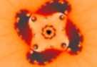
![[IMAGE]](ATOMICt_fractal.jpg)
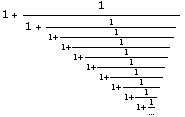
Continued fractions...Humm! ...Autosimilarity---> Fractal.
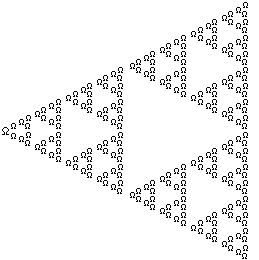
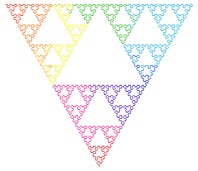
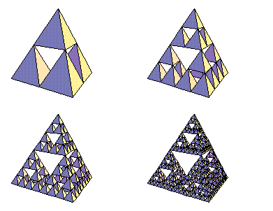
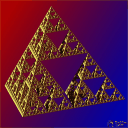
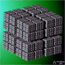
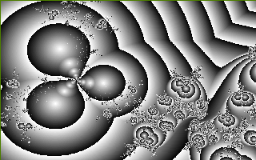
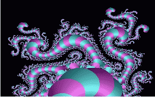
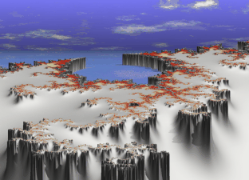

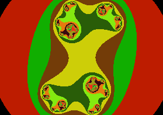
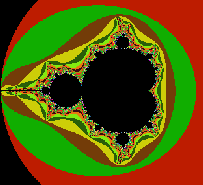
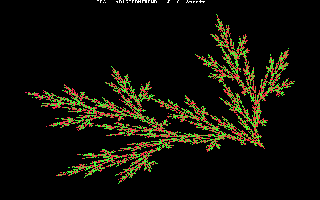
![[IMAGE]](fract009.jpg)
You may find some of these and many other fractal-images in their original site at
 ftp.ira.uka.de
or
i30www.ira.uka.de/~ukrueger/fractals/
ftp.ira.uka.de
or
i30www.ira.uka.de/~ukrueger/fractals/
See also
ccrma-www.stanford.edu/~stilti/
sprott.physics.wisc.edu/fractals.htm
home.swbell.net/pifjacks/phil004.ht
www.chaosfrac.freeservers.com/gallery.htm
Fractal Domains
An excellent fractal gallery. Also provides
shareware software for PowerMacs to produce fractals.
Lifesmith
Classic Fractals
Has an excellent fractal gallery. Sells fractal
art.
Icon
Bazaar
Lots of fractal icon gifs.
The
Fractal Factory
Allows you to create some fractals. Large
galleries and lots of fractal links.
Mandelbrot
Exhibition
A site devoted to images of and explanations pertaining
to the Mandelbrot and corresponding Julia sets.
Spanky
Fractal Database
Extensive site full of fractal images and info about
them plus more links.
Groupe
Fractales - INRIA
French research group studying applications of fractals
and multifractals. Wrote FRACLAB: A fractal analysis toolbox for
signal processing